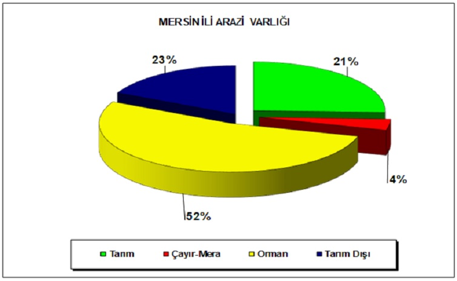

-MERSİN'DE TARIM-
Akdeniz Havzası içerisinde yer alan Mersin İli, 1.585.300 hektarlık yüzölçümü ile Türkiye toplam yüzölçümünün yaklaşık %2’sini oluşturmaktadır. İl yüzölçümünün %21’inde (329.666 hektar) tarımsal üretim gerçekleştirilmektedir.
